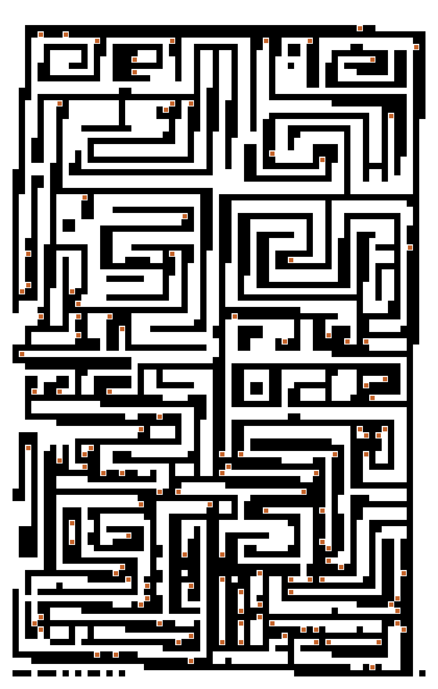
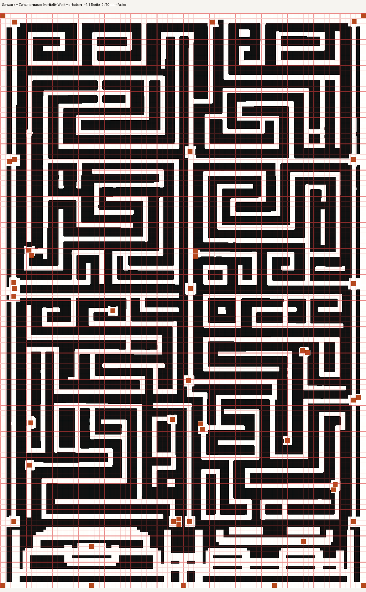

Ahnenraster · Druck 1:1
Platte
140 × 220 mm
. Weiß = Steg, Schwarz = Rille.
Seite 1 = Muster · Seite 2 = Muster + 2/10‑mm‑Raster.
Drucken:
Maßstab 100 %, kein „An Seite anpassen“, Ränder 0 / ohne.
🖨️ Drucken / Als PDF speichern
·
fertiges PDF herunterladen

